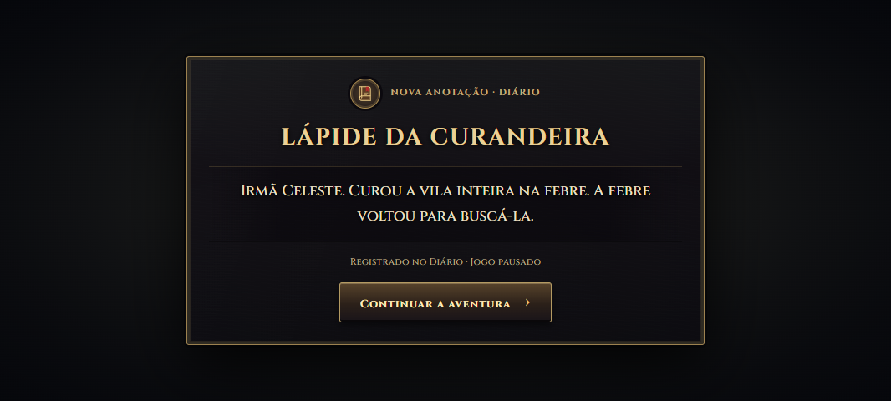
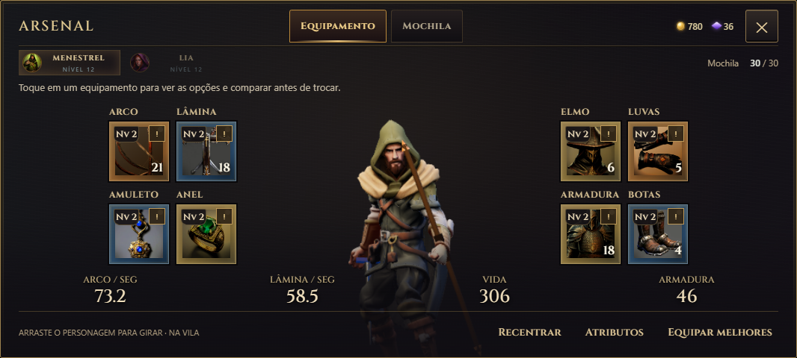
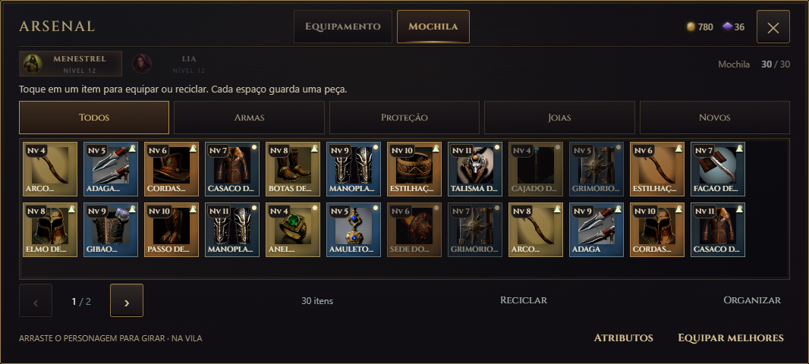

Lápides, equipamentos e mochila receberam o mesmo tratamento da ficha do herói: fontes Cinzel, ferro escuro, detalhes dourados e botões com relevo.
Um Diário dentro da aventura
A descoberta ganha o selo do Diário, moldura de latão e fundo translúcido. O texto mantém o contraste, enquanto as áreas vazias deixam parte do cenário aparecer. O jogo continua pausado, com o mundo monocromático, até você escolher continuar.

Fontes e acabamentos da ficha do herói, com transparência ao redor do texto.
Rosto e capuz no enquadramento
A prévia do personagem teve o enquadramento revisto para acompanhar a animação e manter o rosto centralizado e o capuz visível. A reabertura e a troca de orientação restauram a vista padrão. Recentrar continua disponível no rodapé.

Equipamentos e atributos seguem a mesma linguagem visual.
Mochila compacta, acabamento consistente
A grade de espaços pequenos permanece. Abas, filtros, cartões e detalhes das peças agora combinam com a ficha do herói. Reciclar fica visível na mochila e nos detalhes do item, com confirmação para raros e lendários.

A organização dos itens permanece compacta, com o novo acabamento.
Capturas da bancada de testes. Nove resoluções, zoom, rotação e posição do personagem durante a animação verificados no navegador. Teste em aparelho físico pendente.